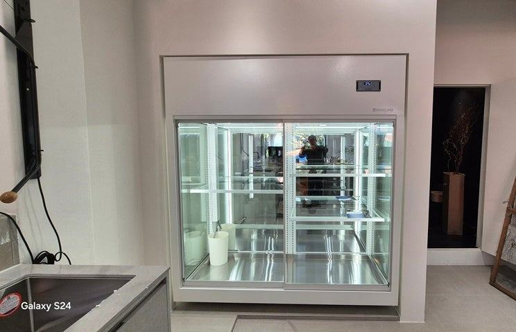

와인(음료)쇼케이스
업소용음료수냉장고 렌탈과 구매, 매장별로 갈리는 기준

업소용음료수냉장고는 운영 기간이 짧거나 시즌 매장처럼 언제 접을지 모르는 경우라면 렌탈이, 몇 년 이상 같은 자리에서 쓸 매장이라면 구매가 대체로 유리합니다. 매장 폭이나 진열 구성이 기성 규격과 맞지 않는다면 렌탈 선택지 자체가 좁아지니 맞춤 제작까지 함께 비교해 보세요.
안녕하세요, 음료 냉장고부터 맞춤 쇼케이스까지 직접 만드는 한성쇼케이스입니다.
편의점, 카페, 분식집을 준비하시는 사장님들께서 요즘 자주 물으시는 게 "음료 냉장고는 그냥 빌려 쓰는 게 낫지 않나요?"입니다.
초기 목돈이 안 들고 고장 나면 알아서 고쳐 준다니 끌리는 게 당연하죠.
그런데 렌탈은 매달 나가는 비용이 계약 기간 내내 이어지고, 쓰고 싶은 크기나 문 개수를 고를 폭이 좁다는 점이 함께 따라옵니다.
매장마다 답이 다른 이유입니다.
오늘은 업소용음료수냉장고를 렌탈로 갈지 구매로 갈지, 매장 상황별로 판단하는 기준과 계약 전에 꼭 물어볼 것들을 정리해 드리겠습니다.
1. 렌탈이 맞는 매장
팝업 매장이나 여름 한철 음료 판매처럼 운영 기간이 정해져 있는 경우, 혹은 상권 반응을 먼저 보고 확장 여부를 정하려는 경우에는 렌탈이 부담을 줄여 줍니다.
장비가 남는 걱정 없이 계약 종료와 함께 정리할 수 있으니까요.
음료 냉장고가 들어갈 자리가 넓고 반듯해서 기성 규격 제품이 그대로 들어간다면 렌탈 상품 중에서도 고를 수 있는 모델이 많습니다.
다만 렌탈 모델은 대부분 표준형 유리문 냉장고라, 매장 콘셉트에 맞춘 외관 색상이나 조명을 고르기는 어렵다는 점은 감안하셔야 합니다.
- 운영 기간이 짧거나 아직 정해지지 않은 매장
- 기성 규격이 그대로 들어가는 넓은 자리
- 초기 자금을 인테리어에 먼저 써야 하는 경우
2. 구매가 맞는 매장
음료 냉장고는 한번 자리 잡으면 몇 년씩 같은 곳에서 돌아가는 장비입니다. 오래 운영할 매장이라면 렌탈료를 계약 기간 전체로 합산해 구매 비용과 나란히 놓고 보셔야 합니다.
이때 계약 종료 후 소유권이 넘어오는지도 함께 확인하세요.
1인 창업 매장처럼 계산대 옆 좁은 틈에 소형 냉장고를 넣어야 하거나, 벽 전체를 음료 진열로 채우고 싶은 매장은 기성 규격으로 맞추기 어렵습니다.
이런 경우는 렌탈보다 처음부터 자리에 맞춰 만드는 쪽이 공간 낭비가 적습니다.


3. 렌탈 계약서에서 꼭 볼 항목
렌탈의 장점은 관리 부담이 줄어든다는 것인데, 막상 계약서를 보면 소모품이나 부주의로 인한 고장은 따로 비용을 받는 경우가 있습니다.
음료 냉장고는 여름철 고장이 곧 매출 손실이라 출장 대응이 며칠 걸리는지도 중요합니다.
중도 해지 조건도 꼭 보세요. 매장을 접거나 이전할 때 남은 기간 렌탈료를 한 번에 내야 하는 조건이면 렌탈의 장점이 사라집니다.
- 무상 수리 범위와 제외 항목
- 고장 접수 후 방문까지 걸리는 기간
- 중도 해지 위약 조건
- 계약 종료 후 소유권 이전 여부
4. 구매할 때 따져 볼 사후관리
구매를 택하면 그때부터 고장 대응은 제조사의 A/S망에 달려 있습니다. 전국 240여 개 A/S 센터처럼 가까운 지역에서 받을 수 있는 구조인지, 온도 이상 같은 문제를 접수하면 어떻게 처리되는지 미리 물어보세요.
제조사가 직접 만드는 제품은 유통 단계를 거치지 않아 같은 예산으로 규격과 디자인 선택 폭이 넓어지는 편입니다.
렌탈 견적을 받으셨다면 같은 자리 치수로 구매 견적도 한 장 받아 두고 비교해 보시길 권합니다.
체크리스트
- 매장 운영 예정 기간
- 냉장고 들어갈 자리의 폭·깊이·높이
- 렌탈료 계약 기간 합산액
- 무상 수리 범위와 해지 조건
- 구매 시 가까운 A/S 센터 여부
1인 창업 매장의 소형 음료 냉장고 구매 상담
1인 창업을 준비하시는 고객님들께서 소형 사이즈 업소용음료수냉장고를 많이 찾으십니다. 공장에서 찍어 낸 획일적인 크기로는 자리가 맞지 않아, 크기와 디자인을 정해 맞춤으로 상담을 진행하는 경우가 많습니다.
맞춤이라 가격 부담을 걱정하시는 분도 계신데, 한성쇼케이스는 유통 회사가 아닌 제조 공장이라 중간 마진 없이 직접 판매합니다.
판매 후에도 온도 고장 같은 사후관리를 함께 책임지는 구조라 구매 쪽을 택하시는 사장님들이 많았습니다.


자주 묻는 질문
렌탈로 쓰다가 나중에 구매로 바꿀 수 있나요?
렌탈 업체의 계약 조건에 따라 다릅니다. 인수 옵션이 있는지, 남은 기간 렌탈료가 어떻게 정산되는지 계약 전에 꼭 확인해 두세요.
작은 매장이라 기성 음료 냉장고가 안 들어가는데 방법이 있나요?
자리 치수에 맞춰 폭과 높이, 문 개수를 정해 제작할 수 있습니다. 설치할 자리의 가로·깊이·높이와 콘센트 위치를 알려 주시면 들어갈 수 있는 구성을 먼저 안내해 드립니다.
구매하면 고장 났을 때 대응은 어떻게 되나요?
전국 240여 개 A/S 센터를 통해 접수와 출장 대응을 진행합니다. 대표전화 031-986-2458로 모델과 증상을 알려 주시면 가까운 센터로 연결해 드립니다.
매장 조건에 맞춰 만드는 한성쇼케이스
원하시는 제품 사진과 설치할 공간 사진만 보내 주셔도 매장에 맞는 구성을 추천해 드립니다.
- 전국 240여 개 A/S 전담 센터 운영
- 본사 대량 자재 매입으로 품질 대비 합리적인 가격
- 유럽제·삼성 냉각 콤프레셔 적용
- 국내 최초 쇼케이스 전문 디자이너 상주
매장 폭과 원하는 진열 구성을 알려 주세요. 실측과 견적을 안내해 드립니다.
031-986-2458